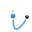

It lets you draw straight lines or curves as a single segment (like a section) or multiple segments. Segments are delimited by 'on-curve' nodes which possess 'off-curve' control handles. These handles can lengthened, shortened and moved to control the shape of the curve.
It has seven modes which are available to select in the context toolbar. Each mode changes how the line is drawn.
 Pen mode
Pen mode
The most powerful and precise mode used to create bézier curves and shapes with smooth or sharp corners and nodes.
 Smart mode
Easily create flowing curves and shapes by clicking and placing nodes.
 Polygon mode
Polygon mode
Used to draw straight lines with sharp nodes and shapes with straight edges.
Line mode
Used to draw single-segment straight lines that self terminate.
Preserve selection when creating new curves
Used in conjunction with any one of the other modes, it keeps the previously drawn curve(s) selected so that their nodes and geometry can be more easily snapped to as you draw.
 Add new curve to selected curves object
Used in conjunction with any one of the other modes, it creates additional curves on the same layer as the initial curve.
 Rubber Band mode
Used in conjunction with any one of the other modes, it previews the next segment to be drawn before placement of the new node. Your cursor position is followed.